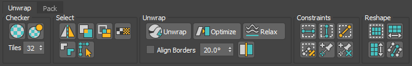
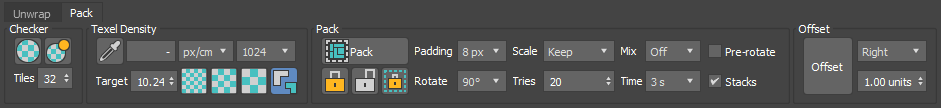
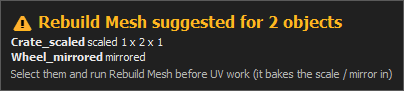

UV Toolbar
Unwrap, optimize, pack and check UVs from one strip that sits under the Edit UVWs window.
What it does
The UV Toolbar puts the everyday UV work in one place: a checker, unwrap and optimize, straight-edge constraints, texel density, pack, and a set of selectors for common UV problems. It works on an Unwrap UVW modifier.
Unwrap, Optimize, Pack and the reshape tools use a UV solver built into Tools9000, so no outside program is needed.
The strip has two tabs. Unwrap holds the Checker, Select, Unwrap, Constraints and Reshape boxes.

Pack holds the Checker, Texel Density, Pack and Offset boxes.

How to use it
- Select an object with an Unwrap UVW modifier and open Edit in the modifier. The toolbar opens by itself under the Edit UVWs window, follows it when you move it, and closes with it.
- Pick the faces you want to work on (or leave nothing selected to work on everything).
- Click Unwrap to flatten them, then Optimize to reduce stretching. Switch to the Pack tab and click Pack to lay the islands out in the 0-1 square.
Without the editor open you can still show the toolbar as a floating window with the UV Toolbar macro (category 9000 Toolkit; Alt+S by default). Press it again to close it.
Inside the Edit UVWs window, U unwraps, O optimizes and P packs. Outside it those keys keep doing what they did before.
Options
Checker
| Control | What it does |
|---|---|
| Checker button | Puts a checker pattern on the object. Each click shows the next of four checkers. Right-click puts the object's own material back. |
| Lit toggle | Shows the checker without shading. |
| Tiles | How many checker squares across. |
Select
| Button | What it selects |
|---|---|
| Flipped | Flipped (mirrored) faces. |
| Overlapping | Faces that overlap others in UV space. |
| Out of tile | Shells that cross a tile border or sit outside the 0-1 square. |
| Density off | Shells whose texel density is more than 10% away from the rest. |
| Similar | Shells shaped like the selected ones. |
| Select marked | The edges marked with the Constraints buttons. |
Unwrap
| Control | What it does |
|---|---|
| Unwrap | Flattens the selected faces (or all of them). |
| Optimize | Reduces stretching while the islands stay where they are. |
| Relax | Max's own Relax. Right-click opens its settings. |
| Align Borders and angle | Straightens borders that are close to horizontal or vertical, up to the angle you set. It is slower. |
| Hard edges from seams | Makes every UV seam a hard edge and cleans up the smoothing groups. Useful before baking. |
Constraints
Select edges, then mark them. Unwrap and Optimize keep marked edges straight.
| Button | What it does |
|---|---|
| Horizontal / Vertical | Keeps the selected edges horizontal or vertical. |
| Align | Keeps the selected edges on one straight line. |
| Clear marks | Removes the marks from the selected edges. |
| Pin / Unpin | Pins the selected UVs (Max's own pins). Unwrap and Optimize leave pinned UVs in place. |
Reshape
| Button | What it does |
|---|---|
| Rectangularize | Turns selected quads into a grid of rectangles. |
| Rectangularize horizontally / vertically | The same, with the long side horizontal or vertical. |
| Parallelize edges | Straightens the selected edges so they all lie at one angle. |
Texel Density (Pack tab)
| Control | What it does |
|---|---|
| Eyedropper (Get) | Reads the texel density of the selection into the grey box next to it. Right-click makes it the target. |
| Unit | px/cm, px/m or px/in. |
| Texture size | The usual square sizes, or Custom for a width and height. |
| Target | The density the buttons beside it aim for. It never changes by itself. |
| Set | Scales the selection to the target density. |
| -1.5x and -2x | Sets the selection to the target divided by 1.5 or by 2. A Normalize pack keeps it that way. |
| Each Shell | When on, each shell is scaled on its own. |
Pack (Pack tab)
| Control | What it does |
|---|---|
| Pack | Packs the selected islands, or all of them. Esc stops it. |
| Padding | Space between islands. |
| Rotate | Islands may turn in steps of this angle (Off for no rotation). |
| Scale | Keep leaves island sizes alone. Normalize gives them all the same texel density first. |
| Mix | How much smaller the biggest islands may get so the others can grow. |
| Tries | How many layouts to try. More is tighter and slower. |
| Time | The search stops after this long. |
| Pre-rotate | Turns each island to its tightest box first. |
| Stacks | Keeps stacked islands together. |
| Lock / Unlock / Select locked | Locked shells stay where they are and Pack lays the rest out around them. |
Offset (Pack tab)
Moves the selected UVs by whole tiles. Choose a direction (Right, Left, Up, Down) and an amount (1 unit is one tile), then click Offset. UVs inside the 0-1 square move out; UVs outside it go back.
Good to know
- A message line at the top of the strip shows what the last action did.
- When you open the toolbar it checks the selected objects. If some are scaled or mirrored, a warning at the top of the viewport lists them and suggests running Rebuild Mesh first, which bakes the scale or mirror in.
- The toolbar remembers its settings between sessions.
- When you close the Edit UVWs window for good, the checker is taken off the objects.
- Locking, unlocking, Optimize, Unwrap and Pack stay fast on models with thousands of islands.
